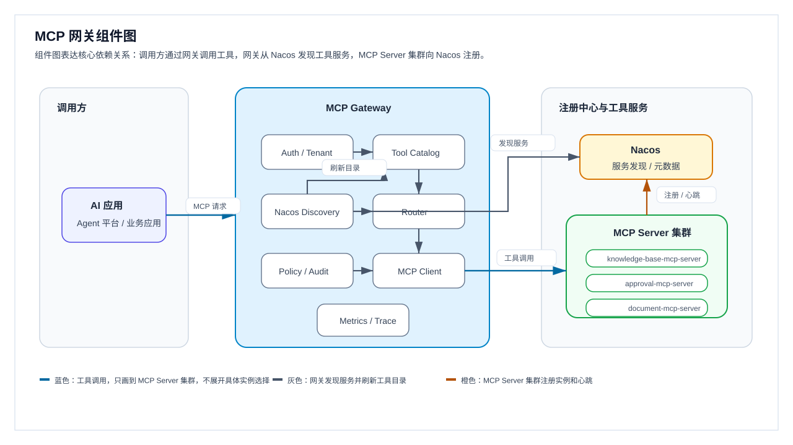
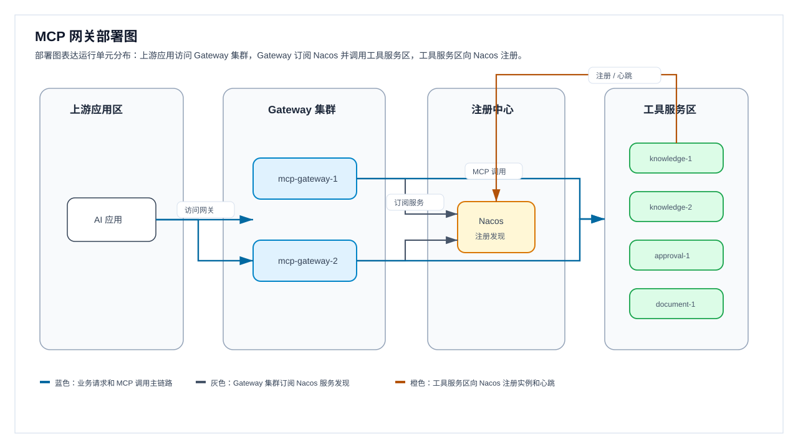
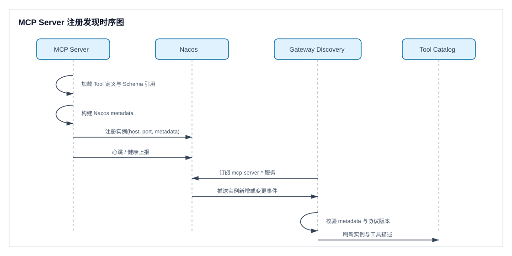
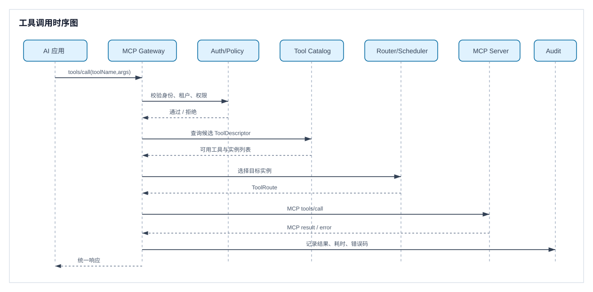
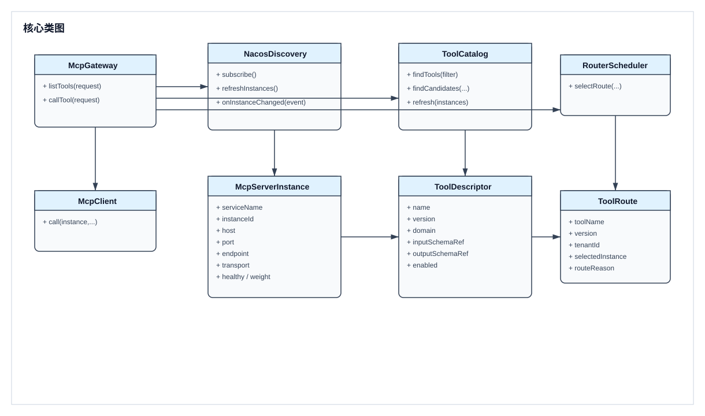

MCP 网关 Nacos 服务发现设计
企业 AI 升级项目需要建设统一工具层，将知识库、审批、文档等能力封装为 MCP Tool。为避免工具服务静态配置、发布耦合和治理分散，本方案设计 MCP Server 自动注册到 Nacos，由 MCP 网关动态发现、聚合工具目录并统一调度。
设计目标
- MCP Server 自注册、自描述、自健康上报。
- MCP 网关动态发现工具服务，无需重启即可感知上下线。
- 对上游 AI 应用暴露稳定的工具发现和调用入口。
- 对下游 MCP Server 提供统一治理，包括鉴权、限流、审计、观测、熔断和灰度。
总体架构
AI 应用 / Agent 平台
|
| MCP Tool List / Call
v
MCP Gateway
|-- 接入鉴权与租户上下文
|-- Tool Catalog 聚合缓存
|-- Nacos Discovery 监听
|-- Router / Scheduler 调度
|-- Policy / RateLimit / Audit
|-- Metrics / Trace / Log
|
| MCP over HTTP/SSE 或 Streamable HTTP
v
MCP Server 集群
|-- knowledge-base-mcp-server
|-- approval-mcp-server
|-- document-mcp-server
|
| 自动注册实例与元数据
v
Nacos核心思路是把 Nacos 作为服务实例和工具元数据的来源，MCP 网关内部维护一份可查询、可路由的 Tool Catalog。MCP Server 只负责声明自己提供哪些工具和端点；MCP 网关负责把这些声明转换为上游可用的统一工具目录。
UML 视图
本 HTML 版本直接引用 SVG 图片，不依赖 Mermaid 渲染能力。
组件图

打开 SVG 原图{kind=link}
组件图说明：
AI 应用 / Agent 平台只依赖 MCP 网关暴露的统一入口，不直接感知后端 MCP Server 实例。Auth / Tenant负责应用身份、用户身份与租户上下文解析，是所有工具调用进入调度前的前置校验。Nacos Discovery订阅 Nacos 中的 MCP Server 实例变化，并把实例、协议端点、工具元数据转换为网关内部对象。Tool Catalog聚合所有可用工具，支持按工具名、版本、领域、标签、租户范围进行查询。Router / Scheduler根据目录、权限、灰度、健康状态和权重选择目标实例。MCP Client负责向下游 MCP Server 集群发起真实tools/call调用；组件图只画到集群边界，具体选择哪个实例由Router / Scheduler在运行时决策，细节放到时序图和调度说明中表达。Policy / Audit和Metrics / Trace分别承载限流、审计、指标和链路追踪等治理能力。- 图中蓝色表示 MCP 工具调用链路，只画到 MCP Server 集群；灰色表示服务发现与目录刷新链路；橙色表示 MCP Server 集群注册实例与心跳。组件图不展开每个 Server 实例的调用分支，避免把“可选路由”误解为“同时调用”。
部署图

打开 SVG 原图{kind=link}
部署图说明：
上游应用区只访问Gateway 集群，不直接访问 Nacos 或工具服务区。Gateway 集群可多实例部署，每个实例独立订阅 Nacos，保持本地 Tool Catalog。注册中心只表达 Nacos 的服务发现职责，不承载业务调用。工具服务区包含多个 MCP Server 实例，部署图只展示实例分布；具体工具路由由网关调度完成。- 图中蓝色表示业务请求和 MCP 调用主链路，灰色表示 Gateway 订阅 Nacos，橙色表示工具服务实例注册和心跳。
MCP Server 注册发现时序图

打开 SVG 原图{kind=link}
工具调用时序图

打开 SVG 原图{kind=link}
核心类图

打开 SVG 原图{kind=link}
模块设计
MCP Server 注册模块
每个 MCP Server 启动时向 Nacos 注册服务实例。建议每类工具服务使用独立 serviceName，例如 mcp-server-knowledge-base、mcp-server-approval、mcp-server-document。
- 实例基础信息：IP、端口、权重、集群、命名空间、分组、健康状态。
- MCP 元数据：协议版本、传输方式、工具清单、工具版本、能力标签、租户范围、鉴权类型、灰度标识。
- 实例下线时主动注销；异常退出时依赖 Nacos 心跳或健康检查剔除。
Nacos Discovery 模块
- 拉取全量服务与实例元数据。
- 监听实例新增、删除、健康状态变化和元数据变化。
- 将 Nacos 原始实例转换为内部
McpServerInstance。 - 通知 Tool Catalog 进行增量刷新。
为防止 Nacos 短暂抖动影响调用，网关应保留本地缓存，并设置缓存 TTL、最后可用版本和降级策略。
Tool Catalog 模块
- 按
toolName建立索引。 - 按
domain、tags、version、tenantScope建立过滤条件。 - 支持同名工具多版本或多实例。
- 标记工具可用状态、灰度状态和推荐实例。
当多个 MCP Server 注册同名工具时，默认按 toolName + version + domain 去重；如果仍冲突，则进入冲突状态，不对外暴露为默认可调用工具。
Router / Scheduler 模块
- 根据
toolName查找候选工具。 - 根据租户、权限、版本、标签和灰度规则过滤。
- 根据健康状态、权重、负载和熔断状态选择实例。
- 通过 MCP Client 调用目标 MCP Server。
- 记录调用结果，并反馈给熔断、指标和审计模块。
MCP 协议适配模块
网关对上游提供 MCP 兼容入口，至少包含 tools/list 和 tools/call。下游连接方式建议优先支持 MCP Streamable HTTP；如现有服务使用 SSE，也可通过适配层兼容。
安全与治理模块
- 鉴权：验证上游应用身份、用户身份、租户上下文。
- 授权：校验调用方是否允许访问目标 Tool。
- 限流：按应用、租户、用户、Tool 维度限流。
- 审计：记录调用方、工具、参数摘要、结果状态、耗时和错误码。
- 脱敏：日志中避免落明文敏感参数。
- 熔断降级：实例连续失败后临时摘除，保留可配置恢复窗口。
Nacos 元数据约定
{
"mcpProtocolVersion": "2025-03-26",
"transport": "streamable-http",
"endpoint": "/mcp",
"domain": "knowledge-base",
"serverVersion": "1.0.0",
"tenantMode": "shared",
"authType": "gateway-token",
"tools": [
{
"name": "knowledge.search",
"version": "1.0.0",
"description": "Search enterprise knowledge base",
"tags": ["knowledge", "search"],
"inputSchemaRef": "nacos://mcp-schemas/knowledge.search/1.0.0",
"outputSchemaRef": "nacos://mcp-schemas/knowledge.search/1.0.0",
"enabled": true
}
],
"gray": {
"enabled": false,
"labels": []
}
}- 小规模元数据可直接放在 Nacos instance metadata。
- 大型 schema 不建议直接塞入实例 metadata，可使用
schemaRef指向 Nacos Config、对象存储或独立元数据服务。 - 工具名采用领域前缀，例如
knowledge.search、approval.submit、document.generate。 - metadata 增加
metadataVersion后可支持兼容升级。
核心流程
MCP Server 启动注册
MCP Server 启动
-> 加载本地 Tool 定义
-> 生成 Nacos 注册 metadata
-> 注册 Nacos 实例
-> 开始心跳或健康上报
-> 对外提供 /mcp 与 /health如果注册失败，MCP Server 可以继续启动但标记为不可发现；生产环境建议注册失败超过阈值后启动失败，避免服务已运行但网关不可见。
网关发现刷新
MCP Gateway 启动
-> 订阅 mcp-server-* 服务
-> 拉取 Nacos 全量实例
-> 校验 metadata
-> 构建 Tool Catalog
-> 监听 Nacos 变更
-> 增量刷新工具目录刷新过程应使用版本化快照，先构建新 Catalog，再原子替换，避免查询时读到半更新状态。
工具调用
AI 应用发起 tools/call
-> 网关鉴权与租户解析
-> Tool Catalog 查询候选工具
-> Policy 过滤
-> Scheduler 选择实例
-> MCP Client 调用下游 MCP Server
-> 统一错误码映射与响应封装
-> 记录指标、Trace 和审计关键数据对象
| 对象 | 关键字段 | 说明 |
|---|---|---|
McpServerInstance |
serviceName、instanceId、host、port、endpoint、protocolVersion、transport、weight、healthy、metadataVersion、tags、tools | 网关内部识别和调度 MCP Server 实例的基础对象。 |
ToolDescriptor |
name、version、domain、description、inputSchemaRef、outputSchemaRef、tenantMode、authPolicy、enabled、providerInstances | 聚合后的工具描述，用于工具发现和候选实例选择。 |
ToolRoute |
toolName、version、tenantId、selectedInstance、routeReason、policySnapshot | 一次工具调用的路由决策结果。 |
高可用与异常处理
- Nacos 不可用：网关继续使用最后一次成功加载的 Catalog，并输出告警；超过 TTL 后可按配置进入只读发现或拒绝新工具调用。
- MCP Server 不健康：Discovery 标记不可用，Scheduler 不再选择该实例。
- 工具元数据非法：跳过该实例的非法工具，保留实例其他合法工具，并记录告警。
- 同名工具冲突：进入冲突态，需通过版本、领域或显式优先级解决。
- 下游调用超时：按 Tool 维度配置超时时间，失败计入熔断统计。
- 网关多实例部署：每个网关实例独立订阅 Nacos；Tool Catalog 构建逻辑保持确定性。
配置建议
mcpGateway:
nacos:
namespace: my-cloud-ai
group: MCP_SERVER_GROUP
servicePattern: mcp-server-*
watchEnabled: true
cacheTtlSeconds: 300
catalog:
conflictPolicy: mark-conflict
schemaLoadMode: lazy
routing:
defaultStrategy: weighted-round-robin
healthRequired: true
governance:
defaultTimeoutMs: 30000
circuitBreakerEnabled: true
auditEnabled: true兼容与演进
- 第一阶段：完成 MCP Server 注册、网关发现、工具目录聚合和基础调用。
- 第二阶段：补齐鉴权、限流、审计、Trace、熔断和灰度。
- 第三阶段：引入独立 Tool Metadata 服务，支持更复杂的 schema、工具市场和权限编排。
- 第四阶段：支持多注册中心、多环境迁移和跨地域容灾。
风险与待确认
风险与取舍
- 将工具 metadata 放入 Nacos 简单直接，但不适合承载大型 schema；因此保留
schemaRef。 - 网关统一调度降低上游复杂度，但会成为关键链路；需要多实例部署和缓存降级。
- MCP 协议仍在演进，协议版本需要显式注册并在网关侧做兼容策略。
- 同名工具冲突在多团队接入时概率较高，必须在命名规范和冲突策略上提前约束。
待确认项
- MCP Server 的主要技术栈与 MCP SDK 版本。
- 当前 Nacos 环境的 namespace、group、鉴权方式和网络连通策略。
- 上游 AI 应用希望直接使用 MCP 协议，还是通过现有 HTTP API 间接调用。
- 工具级权限模型是否按租户、角色、用户或应用维度控制。
- 知识库、审批、文档三个首批 Tool 的名称、参数 schema 和响应 schema。